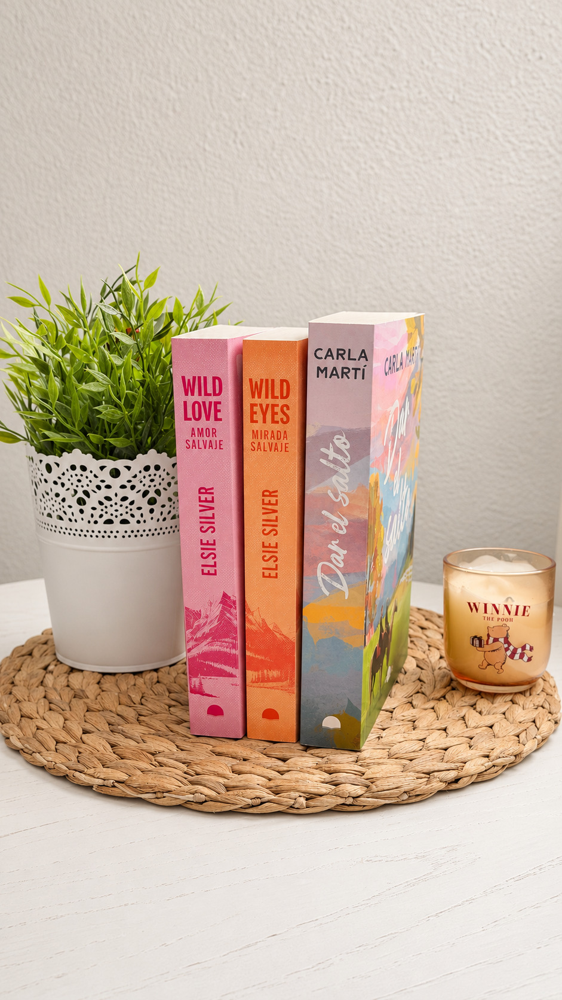
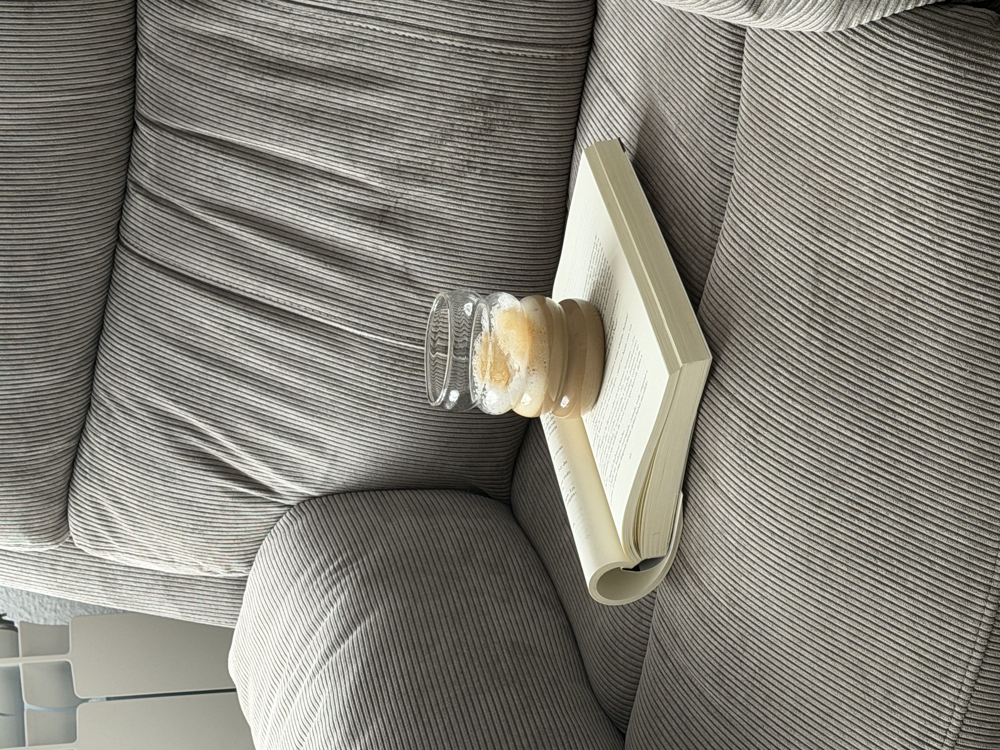

No podrás parar
Qué me gustó de esta lectura y a quién se la recomendaría.
Un rincón para compartir lecturas, recomendaciones y libros pendientes.
Ver las entradas ↓
Qué me gustó de esta lectura y a quién se la recomendaría.

Los títulos que tengo pendientes y por qué me apetece leerlos.

Los pequeños ratos que puedo dedicar a la lectura durante la semana.